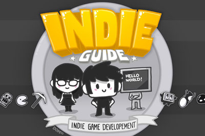
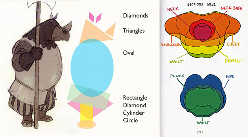

原文：21 Free Learning Resources for Game Developers
游戏开发者总是很难找到优秀的学习资源，特别是那些免费的资料。近日，海外业内资深人士Nathan Lovato在博客中公布了自己浏览了无数网站后筛选出的21个线上免费学习网站，分享给游戏开发者。
该网站的免费部分包括游戏开发者大会的嘉宾演讲视频。在这里，游戏开发者可以找到目前手游行业最有经验和最受欢迎的开发者分享的游戏创作方面的见解。GDC Vault的免费资源主要是视频和PPT。需要注意的是，在YouTube上面已创建了新的GDC Vault频道,每周会发布一些视频，游戏开发者可以向行业领导者学习经验。
该网站为游戏开发者提供了一份完整、免费的细分类资源，指导他们推广游戏。在这里，游戏开发者不仅能找到YouTube游戏达人名单，还能找到Pixel Prospector的Video Game Journaliser视频游戏记者联系表。

这是一个很受欢迎的YouTube频道。在这里，游戏开发者能找到关于游戏设计的简短而具体的视频。该网站的另一特征是提供游戏开发建议，内容往往与游戏行业最新资讯息息相关。正因为如此，通过Extra Credits游戏开发者能及时了解到游戏创作世界的发展进程。
这个网站是由本文作者的一位开发者朋友Sean Howard推荐的。在这个网站中，游戏开发者能看到Sean Howard设计和编写的300个游戏概念。在每个条目中，他都记录下了他的想法、算法和设计过程。
5、Donjon
这是一个很好的学习入口。对于RPG游戏开发者来说，这个网站不仅充满乐趣，而且十分有用。它包含了各种专业信息，以启发开发者的创意思维。这个网站最初是为PC端玩家提供服务的，但对RPG游戏开发者来说，上面的资源都非常有价值。
6、Scroll Back：The Theory and Practice of Cameras in Side-Scrollers
“滚动理论”是Gamasutra网站的一篇文章。Nathan Lovato在推荐中特别把这篇文章单独罗列出来，他认为游戏开发者可以仔细研读一番，将会收获颇多。
这是一本免费的编程书，它涵盖了各种常见的适用于游戏创作的编程模式。每个章节都从一个具体的例子出发，阐述了为什么一种编程模式是值得领会的。代码示例都是用C++编写的，浅显易读。
The Ludum Dare每场比赛都会收录很多源代码资源，这都是免费可用的。例如，游戏开发者可以通过Deepnight学习如何用Haxe代码开发游戏。The Ludum Dare的每次活动都会吸引到很多新颖的游戏概念，游戏开发者可以通过查看源代码来了解其他开发者是如何开发游戏的。
这项资源的唯一受益者就是学生了。该网站向游戏开发者提供各种付费服务，但是只要游戏开发者能提供学校的电子邮件地址或有效的学生证件，就能获得免费服务，比如云托管、Github 私人资料库等等。
这个网站提供了一门完整的数字艺术课程，包含200个5分钟的视频。它的作者Matt Kohr是一名自由的概念艺术家，从事娱乐/游戏行业。
11、Proko
这是一个专用于人体和绘图技术研究的YouTube频道。游戏开发者在这里能找到专业、基础的绘画视频，扩展了对于绘画和人体的认知。
这是一个由资深游戏艺术家Chris Hildenbrand 经营的博客，他在使用矢量绘图软件上有20年的经验。网站涵盖了动画、矢量绘图、游戏资源模块化等方面的内容，最新的教程基于Inkscape，它提供了丰富的功能集，并且可以免费使用。
这是一个致力于游戏美术和游戏创作的YouTube频道。该网站大约有30个视频教程，并且每周发布一个新的教程。到目前为止，该频道一直关注二维游戏艺术，但是也有一些有关游戏设计的视频和见解。每周四发布新教程，新教程有英语和法语两个版本。
14、Technical Art: Game Art Tricks
该网站是游戏艺术分析的一个整编。从暴雪的《暗黑破坏3》到Ubisoft的《刺客信3》，再到Edmund McMillen的《以撒的结合》，网站提供了各种各样的技术、游戏和流派方法。
15、Android Art
这是瑞典艺术家Niklas Jansson写的一系列文章。一打开页面，游戏开发者就会发现很多有价值的内容，这些内容介绍了一些使游戏具备艺术性的技巧和原则。除此之外，Chris还在网站上分享了他的艺术之旅。
16、Seven Camels
这是一个由分镜艺术家Mark Kennedy经营的博客。自2006年以来，Mark在博客上分享了他所有关于视觉叙述的知识和经验。如果有游戏开发者想要为自己的游戏创造良好的视觉效果，这个博客非常具有参考价值。

这本书是故事叙述方面的经典著作之一。在这本教科书中，Christopher Vogler详细阐述了Joseph Campbell的《千面英雄》，并试图表明大多数的故事往往遵循相似的整体结构。在这里，游戏开发者能找到编写游戏剧本的秘诀。
这是一个分享漂亮图片的网站。游戏开发者能在这里为他们的游戏找到许多素材，比如新的美景、稀有的动物图片以及其它设计理念。
这是一个专门从单机游戏和桌面游戏中收集图片的网站，网站的图片都是没有水印的。游戏开发者在这里能找到很多游戏的精美插图，比如《奥丁领域》、《龙战士4》、《黑暗之魂3》。
这个网站提供各种免费资源供游戏开发者学习音乐、语言、编程等等多方面的知识。这是一个综合性的免费网站，游戏开发者可以通过学习各种免费课程提升自己的实力。
这也是一个提供各种免费课程的网站。网站课程按类别区分，比如社会科学、游戏、计算机等等。
总结：
以上这些网站或许对你的游戏创作有帮助，也欢迎你分享更多游戏开发相关网站。